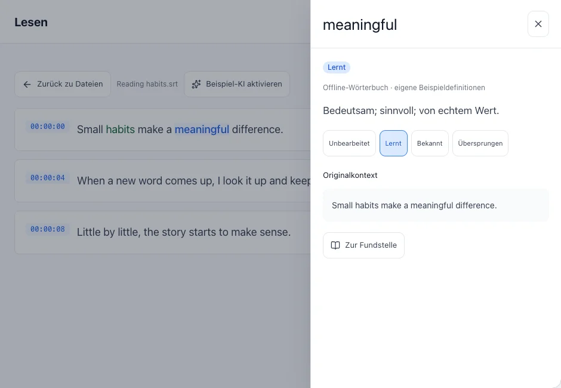
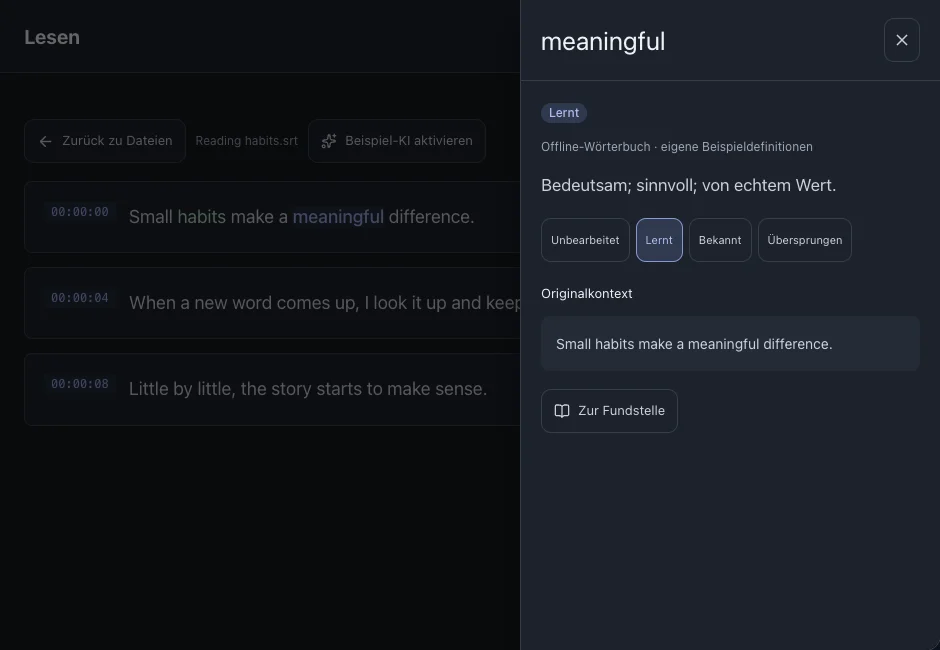

Lesen und Nachschlagen
Lies Untertitel und schlage Wörter im Kontext nach. Schließe das Definitionsfenster, um weiterzulesen.
Auf dieser Seite
Ein Wort nachschlagen
- Öffne eine Datei und klicke auf ein Wort in einer Untertitelzeile.
- Lies Bedeutung und Originalsatz. Auf dem Desktop öffnet sich das Fenster rechts, auf dem Handy von unten.
- Schließe das Fenster und lies weiter. Fehlt eine Definition, prüfe Lernsprache und Wörterbucheinstellungen.



Siehe auchWörterbücher
Den Lernstatus ändern
Markiere zu lernende Wörter als in Bearbeitung, bekannte Wörter als bekannt und nicht benötigte Einträge als ignoriert. Unbearbeitet bedeutet noch nicht eingeordnet.
- Öffne die Wortdetails und ändere den Status.
- Die Änderung erscheint auch im Wortschatz und in der Statistik.
Kontext und Wendungen verstehen
KI ist optional. Lokales Gemma benötigt einen separaten Modelldownload. Cloud-KI benötigt deine Dienstkonfiguration und erhält den ausgewählten Text.
- Konfiguriere und aktiviere KI in den Einstellungen.
- Starte die Analyse auf der Datei- oder Leseseite und warte auf das Ergebnis.
- Wähle eine erkannte Wendung, um Bedeutung und Originalkontext zu sehen. Ergebnisse hängen von Sprache, Modell und Inhalt ab.
Siehe auchKI-AnalyseWörter und Wendungen